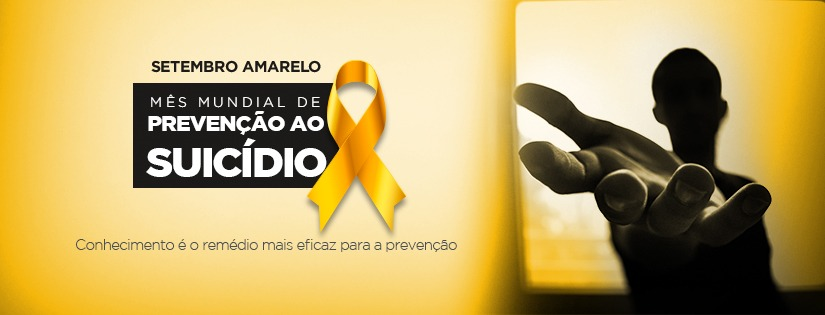

Setembro Amarelo é uma campanha brasileira de prevenção ao suicídio, iniciada em 2015. O mês de setembro foi escolhido para a campanha porque, desde 2003, o dia 10 de setembro é o Dia Mundial de Prevenção do Suicídio.
Em setembro de 1994, nos Estados Unidos, o jovem de 17 anos Mike Emme cometeu suicídio. Ele tinha um Mustang 68 amarelo e, no dia do seu velório, seus pais e amigos decidiram distribuir cartões amarrados em fitas amarelas com frases de apoio para pessoas que pudessem estar enfrentando problemas emocionais.
O suicídio é uma triste realidade que atinge o mundo todo e gera grandes prejuízos à sociedade. De acordo com a última pesquisa realizada pela Organização Mundial da Saúde - OMS em 2019, são registrados mais de 700 mil suicídios em todo o mundo, sem contar com os episódios subnotificados, pois com isso, estima-se mais de 01 milhão de casos. No Brasil, os registros se aproximam de 14 mil casos por ano, ou seja, em média 38 pessoas cometem suicídio por dia.
Ao contrário de outras campanhas como o Dezembro Vermelho e o Outubro Rosa, o Setembro Amarelo não é reconhecido oficialmente em âmbito nacional por meio de lei federal. Contudo, esse reconhecimento já ocorreu localmente em estados, como em Santa Catarina em 2018, e em vários municípios, que instituíram oficialmente a campanha
Esse movimento, como o nome indica, acontece durante todo o mês de setembro. Ele visa conscientizar as pessoas acerca do suicídio, bem como prevenir o surgimento de novos casos, incentivando pessoas tanto a buscar ajuda como a identificar quando alguém precisa de ajuda.
Ações para o Setembro Amarelo
Palestra com especialistas.
Conteúdo sobre saúde mental.
Decoração da empresa com a marca da campanha.
Pausas e intervalos com atividades.
Parcerias com serviços para a saúde e bem-estar.
Programação exclusiva para a TV corporativa.
Todo o mês, a sociedade se une para debater saúde mental e para relembrar a importância de saber reconhecer sinais de comportamento depressivo ou suicida em familiares e amigos.fonte: Wikipedia.com, santacasasp e.com setembro amarelho.com
